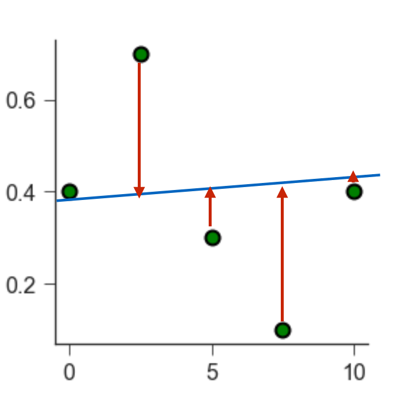

Unit 07: Fitting Part II – Linear and non-linear Fits
Contents
Unit 07: Fitting Part II – Linear and non-linear Fits#

Author: Dr Antonia Mey
Email: antonia.mey@ed.ac.uk
Learning objectives#
By the end of this unit, you should be able to
Get more practice with plotting data and computing molecular properties.
Test how correlated two datasets are using
scipyUnderstand how to find the minimum of a function computationally.
Use the library
scipyto find a line of best fit.Use the library
scipyto be able to fit an exponential function.Know of other fitting functions, such as polynomial or Gaussian fits.
Table of Contents#
Links to documentation#
You can find the full documentation to scipy at scipy.org.
Jupyter Cheat Sheet
To run the currently highlighted cell and move focus to the next cell, hold ⇧ Shift and press ⏎ Enter;
To run the currently highlighted cell and keep focus in the same cell, hold ⇧ Ctrl and press ⏎ Enter;
To get help for a specific function, place the cursor within the function’s brackets, hold ⇧ Shift, and press ⇥ Tab;
Import libraries#
import sys
import os.path
sys.path.append(os.path.abspath('../'))
from helper_functions.mentimeter import Mentimeter
import numpy as np
import matplotlib.pylab as plt
import pandas as pd
import math as m
1. Finding the line of best fit between two sets of data points#
From the Anscombe’s quartet we have learned that the correlation coefficient alone will not tell us everything about the data.
how many data points are we correlating?
Are there any outliers?
What is the best fitting line that goes through the data?
Reminder: functions and graphs#
Plots usually show the relationship between two related values, one (or more) independent variable(s), and a dependent variable one. In an experiment:
Independent variables (often denoted \(x\)) are measurable and unaffected by the value of other variables
Dependent variables (often denoted \(y\)) have values that are affected by the value of independent variables
Mathematically one can say: \(y = \mathrm{function}(x)\), or \(y = f(x)\).
Typical functions in chemistry#
Linear function: \(y=mx+b\)
Polynomial functions: \(y=ax^n+bx^m+c\)
Power Function: \(y=ax^m\)
Power functions can be linear, when taking the logarithm. Remember: \(\log y = m \log x + \log a\)Exponential functions: \(y=ae^{mx}\)
Exponential functions are linear for a plot of the natural logarithm of the dependent variable against the independent variable: \(\ln y = mx+\ln a\)
Example 1: Solubility of sodium chloride#
The maximum amount of sodium chloride you can dissolve in water will change as a function of temperature.
The file sodium_data.dat contains some measurements by a student raising water temperature from 0\(^\circ\)C to 100\(^\circ\)C.
For example, if you have 26.1 g of salt it will dissolve in 100 g of water at 20\(^\circ\)C, but if you add another 2 g the remaining salt will just stay solid. However, at 70\(^\circ\)C the additional 2 g will also dissolve.
Solubility is the dependent variable, as it depends on the independent variable temperature.
The independent variable is often plotted along the x-axis and the dependent variable along the y-axis.
data = pd.read_csv("data/sodium_data.dat", delimiter="\t")
# Plot the data here, and answer the question below
# FIXME
Click here to see the solution to Example 1.
temp = data["temperature/C"]
solubility = data["solubility/g NaCl/100g water"]
plt.plot(temp, solubility)
plt.xlabel("temperature (C)")
plt.ylabel("solubility (g)")
Mean Square Error (MSE)#
How do we find a line of best fit through our data?
~~Eyeball it by hand~~
Programmatically
To find the best fit, the computer needs to be able to quantify how well a line fits the data.
As an example, let’s take some scattered data (green points below). We want to fit a linear model (blue line) through them. By eye, we can see that a line at \(y = 0\) does not fit the data well.

Each green point is located at a certain distance from the blue line. We call this distance a residual. A good fit leads to small residuals.

We can quantify how well a line fits the data by calculating the Mean square error (MSE). The MSE is a second order polynomial is defined as:
\(\mathrm{MSE} = \frac{1}{n}\sum(Y_i - \hat Y_i)^2\)
\(n\) is the number of data points,
\(Y_i\) is the observed value (i.e. the measured data point),
\(\hat Y_i\) is the predicted value (i.e. the value that lies on the line of best fit).
To find the line of best fit, we need to find which combination of its parameters (for a linear function, slope and intercept) leads to the smallest MSE.
{kind=link}
How do we minimise a function again?
1.1. Finding the minimum of a function#
To remind ourselves of how the minimum of a function can be found, we will take as example a diatomic molecule, e.g. \(O_2\). We can model the bond between the two atoms as a harmonic oscillator (i.e. a spring): \(y=a(x+b)^2\).
Tasks 3#
\(f(r) = 0.5(r -2)^2\)
Click here to see the solution to Task 3.1.
We start with the first order derivative of the function \(f'(r) = 2/2(r-2)^1(1) = (r-2)\)
In order to find the minimum we set the first order derivative to zero \(f'(r) = 0 = r-2\)
And we solve for r: The minimum can be found at \(r=2\)
This time use scipy.optimize.minimize.
You can find more information on the minimize function in the documentation here. Let’s arbitrarily choose an initial guess of \(r = 4\), and use the minimize function. What do the outputs mean? Does the output change based on the solver method used? Can you also plot the function?
Hint: Start by writing a function def f(r) defining our harmonic oscillator.
# Task 2: Test out the solution in this cell:
def f(r):
# FIXME
# create an array using np.arange with 100 values from -10 to 10.
r = # FIXME
# plot the function r v. f(r)
# FIXME
# use optimise.minimize to find the minimum
# FIXME
# what happens if you use a different starting point? Try a different optimizer?
# FIXME
Click here to see the solution to Task 3.2.
from scipy import optimize
def f(r):
return 0.5*(r-2)**2
# defining the r values
r = np.arange(-10,10,0.1)
plt.plot(r, f(r))
print(optimize.minimize(f, x0=4))
# Trying with a different method and starting point
print(optimize.minimize(f, x0=7, method="L-BFGS-B"))
scipy.optimize.minimize. Try different starting points and plot the function!
# FIXME
Click here to see the solution to Task 3.3.
from scipy import optimize
def f(x):
return np.power(x,4)+np.power(x,3)-6*x**2
# defining the r values
r = np.arange(-4.1,3.7,0.1)
plt.plot(r, f(r))
print(optimize.minimize(f, x0=4))
# Trying with a different method and starting point
print(optimize.minimize(f, x0=7, method="L-BFGS-B"))
1.2. Line of best fit and residuals#
Take a look at the linregress function in scipy. It will allow you to find the line of best fit.
In order to find the line of best fit, we need to find the minimum of the \(\mathrm{MSE}\) function, but it is now give by \(\mathrm{MSE}=\frac{1}{n}\sum(Y_i-\hat Y_i)^2\). Now the issue that this function does not depend on a single data point Y anymore but many \(Y\)s! You can think of it graphically. You are trying to minimise the area of squares around your residuals.
You can use linear least squares if your model parameters combine linearly.

Then the best line will have the smallest area of all squares of your residuals:

Tasks 4 #
Mathematical background:
There are many different algorithms for this problem. If you have linear data and your problem is overdetermined the analytical solution of using linear least squares, will be the best.
https://en.wikipedia.org/wiki/Least_squares
https://www.youtube.com/watch?v=YwZYSTQs-Hk
linregress function in scipy.stats for the solvation data of NaCl?
# FIXME
Click here to see the solution to Task 4.2.
from scipy import stats
data = pd.read_csv("data/sodium_data.dat", delimiter="\t")
temperature = data.iloc[:, 1].to_list()
solubility = data.iloc[:, 2].to_list()
result = stats.linregress(temp,solubility)
# FIXME
Click here to see the solution to plotting the line of best fit in Task 4.3
# plotting the line of best fit
plt.plot(temp, solubility, "o", label="solubility data")
plt.plot(np.array(temp), res.intercept + res.slope*np.array(temp), "r", label="fitted line")
plt.legend()
plt.xlabel("Temperature ($^{\circ}$C)")
plt.ylabel("Solubility (mol/l)")
Click here to see the solution to plotting the residuals in Task 4.3
# plotting the residuals
residual = solubility -(res.intercept + res.slope*np.array(temp))
plt.plot(temp,residual, "o", color="darkblue")
plt.title("Residual Plot")
plt.xlabel("Independent Variable")
plt.ylabel("Residual")
Click here to see the solution to plotting the histogram of residuals in Task 4.3:
# plotting the histogram of residuals
histogram = plt.hist(residual, bins=20)
plt.xlabel("Residual")
plt.ylabel("Frequency of residual")
Sanity checking your linear regression#
When looking at the distribution of residuals you expect them to be normally distributed. This means that the regression model (your line of best fit) should be randomly better or worse for certain data points making the right prediction. You can check this by plotting a histogram of your residuals. Your data behaves as expected if the distribution follows a normal distribution. For more analysis you can do on your regression fit see here.
2. Fitting a non-linear function#
The time a drug will survive in the body can often be described by a single exponential process similar to \(C(t) = C(0)\exp(-kt)\), where \(k\) is the reaction constant and \(C(t)\) the concentration of e.g. a drug in the blood after time \(t\). Let’s look at an example measurement of concentrations over time and see if we can determine the reaction rate \(k\).
# Loading the data
exp_data = pd.read_csv("data/drug_concentration.txt", delimiter="\t")
time = exp_data.iloc[:, 1].to_list()
concentration = exp_data.iloc[:, 2].to_list()
fig, ax = plt.subplots(1,1)
ax.scatter(time, concentration)
ax.set_xlabel("time")
ax.set_ylabel("Concentration")
plt.show()
Defining a fitting function#
We need to define the type of function we want to fit. The data looks like an exponential decay, so we can define an exponential function to be fitted. Using the definition from before, \(f(x) = a\exp(kx)+b\), we can determine the rate constant from the fit.
def exp_func(x, a, k, b):
return a * np.exp(x * k) + b
Initial guesses#
Just like for the linear regression we previously saw, we will need to give the function that will allow us to fit this exponential curve guesses for the initial parameters. Now we don’t just have \(x_0\), but inital guesses for the three parameters \(a\), \(k\) and \(b\). This can be defined as an array!
The actual curve fitting is done with the scipy.optimize.curve_fit function. Take a look at the documentation here.
import scipy.optimize
# using the scipy library to fit the x- and y-axis data
# p0 is where you give the function guesses for the fitting parameters
# this function returns:
# popt_exponential: this contains the fitting parameters
# pcov_exponential: estimated covariance of the fitting paramters
popt_exponential, pcov_exponential = scipy.optimize.curve_fit(exp_func,
time,
concentration,
p0=[1,-0.5, 1])
# we then can find the error of the fitting parameters
# from the pcov_linear array
perr_exponential = np.sqrt(np.diag(pcov_exponential))
# this cell prints the fitting parameters with their errors
print(f"pre-exponential factor = {popt_exponential[0]:2.2f} ± {perr_exponential[0]:2.2f}")
print(f"rate constant = {popt_exponential[1]:2.2f} ± {perr_exponential[1]:2.2f} ")
# Task (advanced): Test out the solution in this cell:
# FIXME
Click here to see the solution to Task 4.4 (advanced).
fig, ax = plt.subplots(1,1)
ax.scatter(time, concentration)
ax.plot(time,exp_func(np.array(time),popt_exponential[0],popt_exponential[1],popt_exponential[2]))
ax.xlabel("Time")
ax.ylabel("Concentration")
plt.show()
2.1. Fitting a Gaussian distribution#
Let’s revisit the dataset from the previous session and fit a Gaussian or normal distribution to the densities of white wine.
# Loading the white wine dataset
df_whites = pd.read_csv("data/winequality-white.csv", delimiter="";"")
pH_whites = df_whites["pH"]
# We're using plt here instead of ax to just get a quick plot
plt.hist(pH_whites, bins=50, alpha=0.5)
import pylab as plb
from scipy.optimize import curve_fit
from scipy import asarray as ar,exp
heights, edges = np.histogram(pH_whites, bins=50, density=True)
# Just an easy way of defining x and y
x = edges[:49]
y = heights[:49]
# We're using plt here instead of ax to just get a quick plot
plt.plot(x,y)
# the number of data
n = len(x)
# note this correction
mean = sum(x*y)/n
# note this correction
sigma = sum(y*(x-mean)**2)/n
# defining the Gaussian distribution
def Gauss(X,C,X_mean,sigma):
return C*exp(-(X-X_mean)**2/(2*sigma**2))
# The actual curve fitting
popt,pcov = curve_fit(Gauss,x,y,p0=[max(y),mean, sigma],maxfev=5000)
# plotting the result
plt.plot(x, y, "b+:", label="data")
plt.plot(x, Gauss(x,*popt), "ro:", label="fit")
Hint: use the above code as a template
# FIXME
Click here to see the solution to Task 4.5.
# This is the main difference, I am now selecting the citric acid column
citric_acid = df_whites["citric acid"]
heights, edges = np.histogram(citric_acid, bins=50, density=True)
x = edges[:49]
y = heights[:49]
# Copying code from before
# the number of data
n = len(x)
# note this correction
mean = sum(x*y)/n
# note this correction
sigma = sum(y*(x-mean)**2)/n
def Gauss(X,C,X_mean,sigma):
return C*exp(-(X-X_mean)**2/(2*sigma**2))
popt,pcov = curve_fit(Gauss,x,y,p0=[max(y),mean, sigma],maxfev=5000)
plt.plot(x, y, "b+:", label="data")
plt.plot(x, Gauss(x,*popt), "ro:", label="fit")
scipy.optimize.curve_fit to fit a linear function. The way you do this is by defining the fitting function as a linear function.
You could use:
def linear_function(x, slope, intercept):
return slope*x + intercept